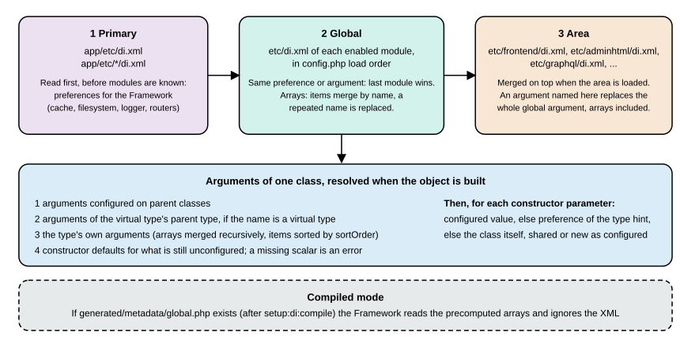

Dependency Injection
|
This content was generated with the assistance of AI and should be verified against the official documentation before being relied on in production. |
Dependency injection (DI) is how almost every extension point of Magento works. A class declares what it needs in its
constructor, the ObjectManager builds those collaborators, and di.xml files decide which concrete class stands behind an
interface, which values reach which constructor argument and which plugins wrap which class. Understanding the few rules
behind it, and the handful of generated classes it produces, removes most of the "why is my class not used" and "why does
the whole CLI fail" surprises. This page covers constructor injection, the ObjectManager, the di.xml scopes and how they
merge, preferences, every argument type, virtual types, factories, proxies, shared instances, generated code and the
error messages of broken wiring.
The page was written against Magento Open Source and Adobe Commerce 2.4.9 (generally available 2026-05-12) and Mage-OS
3.6.0 (2026-10-14, built on the 2.4.9 code base) and checked on 2026-10-27. Every example was run on a Mage-OS 3.6.0
installation in developer mode (PHP 8.5.12) as the module PocketCoffee_DiRoast: php -l, validation of both di.xml files
against ObjectManager/etc/config.xsd with xmllint, the Magento2 PHP_CodeSniffer standard, and the console commands
pocketcoffee:di:probe and pocketcoffee:di:estimate whose output is quoted. Compiled mode (bin/magento setup:di:compile
followed by generated/metadata/*) was exercised only when the environment was built, where it completed with Generated code
and dependency injection configuration successfully.; it was not repeated here because a compile on the shared store
would switch every other user of it to compiled configuration. Adobe Commerce as a Cloud Service (ACCS) has no PHP modules
and therefore no di.xml; see the editions page.
The module is explained file by file in the module anatomy page and the
surrounding architecture in the architecture overview. Plugins, the
other major use of di.xml, are in Plugins, events and observers.
Constructor injection
A class lists its collaborators as constructor parameters typed with a class or interface name. It never creates them with
new and never looks them up.
<?php
declare(strict_types=1);
namespace PocketCoffee\DiRoast\Api;
interface RoastDateProviderInterface
{
public function getNextRoastDate(\DateTimeImmutable $from): \DateTimeImmutable;
}<?php
declare(strict_types=1);
namespace PocketCoffee\DiRoast\Model;
use PocketCoffee\DiRoast\Api\RoastDateProviderInterface;
/**
* Pocket Coffee roasts on Tuesdays and Fridays.
*/
class CalendarRoastDateProvider implements RoastDateProviderInterface
{
private const ROAST_DAYS = [2, 5];
public function getNextRoastDate(\DateTimeImmutable $from): \DateTimeImmutable
{
$day = $from;
while (!in_array((int) $day->format('N'), self::ROAST_DAYS, true)) {
$day = $day->modify('+1 day');
}
return $day;
}
}<?php
declare(strict_types=1);
namespace PocketCoffee\DiRoast\Model;
use PocketCoffee\DiRoast\Api\RoastDateProviderInterface;
/**
* A batch of roasted beans: one injected collaborator, two runtime values.
*/
class RoastBatch
{
/**
* @param RoastDateProviderInterface $dateProvider injected by the object manager
* @param string $sku passed at runtime through RoastBatchFactory::create()
* @param int $grams passed at runtime through RoastBatchFactory::create()
*/
public function __construct(
private readonly RoastDateProviderInterface $dateProvider,
private readonly string $sku,
private readonly int $grams = 250
) {
}
/**
* @param \DateTimeImmutable $from
* @return string
*/
public function describe(\DateTimeImmutable $from): string
{
return sprintf(
'%s (%d g) roasts on %s via %s',
$this->sku,
$this->grams,
$this->dateProvider->getNextRoastDate($from)->format('D Y-m-d'),
get_class($this->dateProvider)
);
}
}The interface is the contract, the class is one implementation, and RoastBatch asks for the contract. Which implementation it
receives is not decided in PHP but in di.xml, the subject of the rest of the page. PHP 8 constructor promotion
(private readonly parameters) works as expected and is the usual style; Magento reads the parameter names and types with
reflection, or from precomputed metadata in compiled mode.
Rules that follow from this:
-
Depend on interfaces from
Api/wherever one exists. A concrete class from another module is an implementation detail that may change in a minor release. -
A parameter of a class type is resolved by the ObjectManager. A parameter without a type (or a scalar,
arrayandcallable) cannot be resolved from the type hint; it needs a default value or a configured argument. -
Keep constructors cheap: no queries, no file access, no logging. Console commands, for example, are constructed on every
bin/magentorun (see proxies below). -
Pass runtime values (a SKU, an ID) to a factory’s
create(), never throughdi.xml.
The ObjectManager
The ObjectManager builds objects. Its interface, Magento\Framework\ObjectManagerInterface, has three methods:
| Method | Behaviour |
|---|---|
|
Returns the shared instance of |
|
Always builds a new instance. |
|
Merges additional DI configuration into the running ObjectManager. The Framework uses it to apply the area’s |
The implementation is Magento\Framework\ObjectManager\ObjectManager; code that has no other way to reach it can call
\Magento\Framework\App\ObjectManager::getInstance(). Neither belongs in business code. The reasons are practical: a
class that fetches its collaborators through the ObjectManager hides its dependencies, cannot be unit-tested with mocks,
escapes static analysis and cannot be replaced by di.xml the way a constructor argument can. The legitimate uses are the
generated factories and proxies (which call create() and get() internally), framework bootstrapping, and diagnostic code
such as the probe command used on this page, whose job is to show what the ObjectManager does.
Two tools of the Magento coding standard enforce the boundary in specific places. The Magento2.Templates.ObjectManager sniff
warns when a .phtml template uses the ObjectManager (ObjectManager should not be used in .phtml template. Templates must
not instantiate new objects within their code.). The Magento2.Classes.DiscouragedDependencies sniff is covered under
proxies. Calling ObjectManager::getInstance() from an ordinary class was not flagged by the standard when tried on the
checked installation, so code review has to catch it.
get() versus create(), measured
The probe command builds a class registered with shared="false" and one with the default. The output, from the checked
installation:
shared (default): get() twice, same instance = true
shared=false: get() twice, same instance = true
shared=false: create() twice, same instance = false
shared=false injected twice, same object: false
default (shared) injected twice, same object: trueRead it as three rules. create() always builds a new object. get() always returns the cached one, even for a type
configured with shared="false": the attribute is ignored by get(). The shared setting acts when the type is injected as
a constructor argument: a shared="false" type is created fresh for each parameter that asks for it (CounterUser received
two different Counter objects), a shared one is the same object everywhere. The setting lives in di.xml:
<type name="PocketCoffee\DiRoast\Model\Counter" shared="false"/>An argument can override it for one injection point with <argument name="x" xsi:type="object" shared="false">...</argument>
(the XSD adds shared and sortOrder to the object argument type).
How di.xml files are found and merged
di.xml exists in three scopes, loaded in this order:

| Scope | Files | When read |
|---|---|---|
Primary |
|
First, before any module is known. It holds the preferences that make the Framework itself work: the cache, the filesystem,
the logger, the router list, the front controller. On the checked installation |
Global |
|
Next, in module load order (the order of |
Area |
|
When the area is loaded: |
The merge rules decide most outcomes, and they differ between merging files of the same scope and merging scopes. Each was
tested on the checked installation or read in Magento\Framework\ObjectManager\Config\Config.
Same scope, different modules: the later module wins; arrays merge by item name. The probe prints the provider class and
the origins array of RoastProfile. PocketCoffee_DiRoast declares the preference to CalendarRoastDateProvider and the
array eth, col. With a temporary di.xml in PocketCoffee_ArchProbe, which loads before PocketCoffee_DiRoast, that adds
a competing preference to AdminRoastDateProvider, the result stayed CalendarRoastDateProvider: the later module (DiRoast)
won. With the same two additions in PocketCoffee_Skeleton, which loads after DiRoast, the result changed:
<?xml version="1.0"?>
<config xmlns:xsi="http://www.w3.org/2001/XMLSchema-instance" xsi:noNamespaceSchemaLocation="urn:magento:framework:ObjectManager/etc/config.xsd">
<preference for="PocketCoffee\DiRoast\Api\RoastDateProviderInterface" type="PocketCoffee\DiRoast\Model\AdminRoastDateProvider"/>
<type name="PocketCoffee\DiRoast\Model\RoastProfile">
<arguments>
<argument name="origins" xsi:type="array">
<item name="bra" xsi:type="string">Brazil Cerrado</item>
</argument>
</arguments>
</type>
</config>PC-ETH-WHL-250 (250 g) roasts on Tue 2026-10-27 via PocketCoffee\DiRoast\Model\AdminRoastDateProvider
interface factory creates: PocketCoffee\DiRoast\Model\AdminRoastDateProvider
"origins": {
"eth": "Ethiopia Yirgacheffe",
"col": "Colombia Huila",
"bra": "Brazil Cerrado"
},The preference changed because the module with the later position won, and the array gained an item because two global
files that configure the same argument are merged item by item. The Skeleton test file was removed again afterwards. This
is why a module that wants to override another one lists it in its module.xml sequence: the sequence guarantees the
order. The module anatomy page explains it.
Area on top of global: the area’s argument replaces the global one completely. etc/adminhtml/di.xml of the module:
<?xml version="1.0"?>
<config xmlns:xsi="http://www.w3.org/2001/XMLSchema-instance" xsi:noNamespaceSchemaLocation="urn:magento:framework:ObjectManager/etc/config.xsd">
<!-- Area file: only the admin area sees this preference and this extra array item. -->
<preference for="PocketCoffee\DiRoast\Api\RoastDateProviderInterface" type="PocketCoffee\DiRoast\Model\AdminRoastDateProvider"/>
<type name="PocketCoffee\DiRoast\Model\RoastProfile">
<arguments>
<argument name="origins" xsi:type="array">
<item name="bra" xsi:type="string">Brazil Cerrado</item>
</argument>
</arguments>
</type>
</config>bin/magento dev:di:info takes an optional area argument and shows the effective configuration of that area:
$ bin/magento dev:di:info 'PocketCoffee\DiRoast\Api\RoastDateProviderInterface'
Preference: PocketCoffee\DiRoast\Model\CalendarRoastDateProvider
$ bin/magento dev:di:info 'PocketCoffee\DiRoast\Api\RoastDateProviderInterface' adminhtml
Preference: PocketCoffee\DiRoast\Model\AdminRoastDateProvider
$ bin/magento pocketcoffee:di:probe --area=adminhtml
DI configuration of area adminhtml loaded
PC-ETH-WHL-250 (250 g) roasts on Tue 2026-10-27 via PocketCoffee\DiRoast\Model\AdminRoastDateProvider
...
"origins": {
"bra": "Brazil Cerrado"
},In the admin area origins contains only bra: the area file named the argument, so the global array (eth, col) was
replaced, not extended. ObjectManager::configure() merges arguments with array_replace at the level of the argument name.
Therefore an area file that wants to add one item to a global array must repeat the items it wants to keep. (Routers and similar
extension arrays avoid the problem because each area has its own array to start with.) The --area option of the probe uses
Magento\Framework\App\ObjectManager\ConfigLoader::load($area) with $objectManager->configure(...), which is the code an
Http::launch() runs; a console command or an integration script that needs area wiring does the same.
Inheritance: arguments flow from parent classes, and virtual types start from their parent type. A class gets the arguments configured on its parents, an interface it implements and, for virtual types, on the type it is a virtual version of, and arrays are merged recursively in that chain. The probe shows the first case:
<type name="PocketCoffee\DiRoast\Model\ParentLabel">
<arguments>
<argument name="label" xsi:type="string">configured on the parent class</argument>
</arguments>
</type>ChildLabel extends ParentLabel has no constructor of its own, and get(ChildLabel::class)->label() printed
configured on the parent class. The virtual-type case is shown below, where it produced a surprising result.
Ordering and removal. Array items that carry a sortOrder (an attribute on the item, or a child item named sortOrder as
in the router list) are sorted ascending when the arguments are collected; items without one count as 0. There is no XML
syntax to delete an inherited array item. Setting an item to xsi:type="null" keeps the key and passes null; routers use a
disable flag in the item for this reason.
Preferences
A preference tells the ObjectManager which class to build when a type name is requested.
<preference for="PocketCoffee\DiRoast\Api\RoastDateProviderInterface" type="PocketCoffee\DiRoast\Model\CalendarRoastDateProvider"/>Both attributes are required. The request for for is resolved by following preferences until there is none, so a preference
whose target has its own preference ends at the last one; a loop raises Circular type preference: A relates to B and
viceversa.. A preference is global to the area it is declared in: every consumer of the interface gets the new class, including
core code. This is the strength and the danger of preferences:
-
A preference for an interface is the intended use: the interface has no implementation until a preference names one. Many
app/etc/di.xmllines are exactly that. -
A preference for a class replaces that class for everybody. Two modules that both prefer a replacement for
Magento\Catalog\Model\Productcannot both win, and the replacement has to keep every method the core code and the other modules call. It also forks your code from the original at every upgrade. Prefer a plugin (it composes), an event observer, a service contract, or a new class that is injected explicitly. -
The later module wins, as shown above, so a preference in an extension may silently be overridden by another.
On the checked installation the same interface resolved to different classes in the global and the admin area (previous section), which is the usual way to give one area its own implementation.
Arguments
<type name="Class"> with an <arguments> child sets constructor arguments by parameter name. Every argument type of the
schema, all in one class:
<type name="PocketCoffee\DiRoast\Model\RoastProfile">
<arguments>
<argument name="label" xsi:type="string" translate="true">Weekly roast</argument>
<argument name="minRestDays" xsi:type="number">4</argument>
<argument name="enabled" xsi:type="boolean">true</argument>
<argument name="origins" xsi:type="array">
<item name="eth" xsi:type="string">Ethiopia Yirgacheffe</item>
<item name="col" xsi:type="string">Colombia Huila</item>
</argument>
<argument name="note" xsi:type="null"/>
<argument name="stateKey" xsi:type="const">Magento\Framework\App\State::PARAM_MODE</argument>
<argument name="mode" xsi:type="init_parameter">Magento\Framework\App\State::PARAM_MODE</argument>
</arguments>
</type>The constructor receives, as printed by the probe from RoastProfile::toArray():
{
"provider": "PocketCoffee\\DiRoast\\Model\\CalendarRoastDateProvider",
"label": "Weekly roast",
"minRestDays": 4,
"enabled": true,
"origins": { "eth": "Ethiopia Yirgacheffe", "col": "Colombia Huila" },
"note": null,
"stateKey": "MAGE_MODE",
"mode": "developer"
}xsi:type |
Resulting value |
|---|---|
|
A string. |
|
A number. |
|
A boolean: the text |
|
|
|
An associative array of |
|
An instance of the class (or virtual type) named in the element, shared unless |
|
The value of a PHP class constant, here |
|
The value of an application initialisation parameter, one of the bootstrap parameters of the request or command.
|
An argument in di.xml overrides a default value in the constructor, and a parameter that is neither configured nor has a
default is an error (see below). Always give an argument its type: without xsi:type the schema rejects the file.
Virtual types
A virtual type is a named configuration of an existing class. It has no PHP file; the name behaves like a class name
anywhere a type is expected (xsi:type="object" arguments, <type name>, even other virtual types), and builds an instance of
the class named in type with the arguments configured for the virtual type. Pocket Coffee needs a logger that writes order
and roast events to its own file:
<virtualType name="PocketCoffeeRoastLogHandler" type="Magento\Framework\Logger\Handler\Base">
<arguments>
<argument name="fileName" xsi:type="string">/var/log/pocketcoffee-roast.log</argument>
</arguments>
</virtualType>
<virtualType name="PocketCoffeeRoastLogger" type="Monolog\Logger">
<arguments>
<argument name="name" xsi:type="string">pocketcoffee</argument>
<argument name="handlers" xsi:type="array">
<item name="roast" xsi:type="object">PocketCoffeeRoastLogHandler</item>
</argument>
</arguments>
</virtualType>
<type name="PocketCoffee\DiRoast\Model\RoastRegistry">
<arguments>
<argument name="logger" xsi:type="object">PocketCoffeeRoastLogger</argument>
</arguments>
</type>RoastRegistry asks only for Psr\Log\LoggerInterface $logger; it does not know about the virtual types:
<?php
declare(strict_types=1);
namespace PocketCoffee\DiRoast\Model;
use Psr\Log\LoggerInterface;
class RoastRegistry
{
public function __construct(private readonly LoggerInterface $logger)
{
}
public function register(string $sku): void
{
$this->logger->info('roast registered', ['sku' => $sku]);
}
}$ tail -1 var/log/pocketcoffee-roast.log
[2026-10-27T16:57:56.534438+00:00] pocketcoffee.INFO: roast registered {"sku":"PC-ETH-WHL-250"} []The inheritance gotcha. The first version of this example used type="Magento\Framework\Logger\Monolog", the core
logger, as the base of the virtual logger. The line then appeared in the new file and in var/log/system.log and
var/log/debug.log: the core logger’s handlers array (system, debug, syslog) is configured in app/etc/di.xml for that
class, a virtual type inherits it, and arrays merge recursively, so the new roast handler was added to the inherited ones.
Trying to remove them with <item name="system" xsi:type="null"/> made things worse: the null values reached Monolog’s
pushHandler() and a TypeError stopped every bin/magento command, because the logger is a dependency of a command that
is built on each run. Basing the virtual type on Monolog\Logger, which has no inherited configuration, gave the intended
result: one line in the new file and none in system.log or debug.log. Core modules use the first pattern and replace one inherited
item by name: Magento_Cron defines Magento\Cron\Model\VirtualLogger on Magento\Framework\Logger\Monolog and replaces
the system handler with its own. Choose the base type deliberately.
A virtual type cannot be extended by plugins (the plugin documentation lists virtual types among the things that cannot be
intercepted), and dev:di:info identifies one: bin/magento dev:di:info PocketCoffeeRoastLogger starts with It is Virtual
Type for the Class Monolog\Logger.
Factories
A factory creates non-shared instances, typically objects that combine injected collaborators with runtime values.
Magento generates it: asking for PocketCoffee\DiRoast\Model\RoastBatchFactory makes the Framework write the class from the name
of the product class plus Factory. In developer mode it appears in generated/code on first use; in compiled mode
setup:di:compile writes it. This is the generated file for RoastBatch, as found on the checked installation:
<?php
namespace PocketCoffee\DiRoast\Model;
/**
* Factory class for @see \PocketCoffee\DiRoast\Model\RoastBatch
*/
class RoastBatchFactory
{
protected $_objectManager = null;
protected $_instanceName = null;
public function __construct(\Magento\Framework\ObjectManagerInterface $objectManager, $instanceName = '\\PocketCoffee\\DiRoast\\Model\\RoastBatch')
{
$this->_objectManager = $objectManager;
$this->_instanceName = $instanceName;
}
/**
* @param array $data
* @return \PocketCoffee\DiRoast\Model\RoastBatch
*/
public function create(array $data = [])
{
return $this->_objectManager->create($this->_instanceName, $data);
}
}(Docblocks of the properties are omitted.) create(['sku' => ..., 'grams' => ...]) passes the array to
ObjectManager::create(), which uses the entries for the constructor parameters of that name and resolves the others from
di.xml. The consumer that needs a batch depends on the factory, not on the ObjectManager:
$batch = $this->batchFactory->create(['sku' => 'PC-ETH-WHL-250', 'grams' => 250]);
echo $batch->describe($from);PC-ETH-WHL-250 (250 g) roasts on Tue 2026-10-27 via PocketCoffee\DiRoast\Model\CalendarRoastDateProviderA factory can also be generated for an interface. PocketCoffee\DiRoast\Api\RoastDateProviderInterfaceFactory was injected into
the probe and create() returned the class of the active preference (CalendarRoastDateProvider globally,
AdminRoastDateProvider after the Skeleton test above), because create() resolves the preference first.
Factories are the right tool when the object is new every time (an entity, a result, a message), when constructor arguments
come from the caller, and when the creation must stay replaceable by a preference. Do not write the factory by hand;
the generated one is the convention, and Magento\Framework\ObjectManager\Code\Generator\Factory is the generator behind it. The
Framework generates other class kinds on the same principle. The generators registered in app/etc/di.xml produce, by
class-name suffix, Factory, Proxy, Interceptor, Repository, Persistor, Converter (also spelled Convertor),
Mapper, SearchResults, Extension and ExtensionInterface classes, ExtensionInterfaceFactory, remote service classes
and deferred proxies.
Proxies
A proxy is a generated subclass that holds nothing but the name of the real class and creates it on the first method call.
It exists to avoid paying for a dependency that is not always used, and to break dependency cycles. The best known case is
the console command: Magento constructs every command registered in CommandListInterface on every bin/magento run. A
command whose constructor receives an expensive object makes every command slower, even bin/magento list.
HeavyEstimator stands for such a dependency; its constructor writes a log line. EstimateCommand receives it:
public function __construct(
private readonly HeavyEstimator $estimator,
?string $name = null
) {
parent::__construct($name);
}Registered like that, each run of bin/magento list wrote a HeavyEstimator constructed line to the log:
$ grep -c "HeavyEstimator constructed" var/log/pocketcoffee-roast.log # before bin/magento list
18
$ bin/magento list > /dev/null; grep -c "HeavyEstimator constructed" var/log/pocketcoffee-roast.log
20
$ bin/magento pocketcoffee:di:estimate; grep -c "HeavyEstimator constructed" var/log/pocketcoffee-roast.log
21list built the estimator twice (the application builds the command list more than once per run) although it executed
nothing of it. The remedy is a proxy, requested in di.xml and not in the constructor:
<type name="PocketCoffee\DiRoast\Console\Command\EstimateCommand">
<arguments>
<argument name="estimator" xsi:type="object">PocketCoffee\DiRoast\Model\HeavyEstimator\Proxy</argument>
</arguments>
</type>$ bin/magento list > /dev/null; grep -c "HeavyEstimator constructed" var/log/pocketcoffee-roast.log
24 # unchanged since the previous reading
$ bin/magento pocketcoffee:di:estimate
18 variants, 250 g each: 4500 g
$ grep -c "HeavyEstimator constructed" var/log/pocketcoffee-roast.log
25(The count of 24 before the list run includes the lines written by earlier runs of the probe.) The proxy was injected where
the constructor asks for HeavyEstimator, because Proxy extends the real class, and the real object was created only by
estimate. The generated proxy, from generated/code/PocketCoffee/DiRoast/Model/HeavyEstimator/Proxy.php:
class Proxy extends \PocketCoffee\DiRoast\Model\HeavyEstimator implements \Magento\Framework\ObjectManager\NoninterceptableInterface
{
protected $_objectManager = null;
protected $_instanceName = null;
protected $_subject = null;
protected $_isShared = null;
public function __construct(\Magento\Framework\ObjectManagerInterface $objectManager, $instanceName = '\\PocketCoffee\\DiRoast\\Model\\HeavyEstimator', $shared = true)
{
$this->_objectManager = $objectManager;
$this->_instanceName = $instanceName;
$this->_isShared = $shared;
}
protected function _getSubject()
{
if (!$this->_subject) {
$this->_subject = true === $this->_isShared
? $this->_objectManager->get($this->_instanceName)
: $this->_objectManager->create($this->_instanceName);
}
return $this->_subject;
}
public function totalGrams(int $variants, int $gramsPerVariant): int
{
return $this->_getSubject()->totalGrams($variants, $gramsPerVariant);
}
}(The magic methods __sleep, __wakeup, __clone and __debugInfo are omitted.) Every public method of the real class is
overridden to forward to _getSubject(), and the proxy implements NoninterceptableInterface, so plugins are applied to the
real object, not to the proxy.
Use a proxy for a dependency that is expensive and used on a minority of code paths, for console commands and cron-heavy objects, and to solve a circular dependency. Do not request the proxy class in a constructor signature: the Magento2 coding standard rejects it, as the sniff output shows:
$ vendor/bin/phpcs --standard=Magento2 --severity=1 Bad2.php
16 | ERROR | Proxies and interceptors MUST never be explicitly requested in constructors.The constructor of the consumer names the real type, di.xml selects the proxy. A final note on the generated classes: if
you add or remove a constructor parameter of a class that already has a generated Interceptor or Proxy, the old file in
generated/code still calls the old constructor and the next request fails with must be of type ..., null given and a trace through generated/code/.../Interceptor.php. Delete the generated directory of the module (or generated/*) and the Framework regenerates it.
The resolution algorithm
The figure of the merge rules answers "which configuration"; the diagram below shows the steps of one get() or create(),
which is the code path the errors of the next section come from.
In compiled mode the "read constructor parameters" and "collect configured arguments" steps read from
generated/metadata/ instead of from reflection and XML, and the plugin decision is precomputed.
Errors you will meet
The probe builds three deliberately broken classes. The messages, as printed on the checked installation:
PocketCoffee\DiRoast\Model\NeedsUnconfigured -> Error: Cannot instantiate interface PocketCoffee\DiRoast\Api\UnconfiguredInterface
PocketCoffee\DiRoast\Model\NeedsScalar -> BadMethodCallException: Missing required argument $label of PocketCoffee\DiRoast\Model\NeedsScalar.
PocketCoffee\DiRoast\Model\CircularA -> LogicException: Circular dependency: PocketCoffee\DiRoast\Model\CircularA depends on PocketCoffee\DiRoast\Model\CircularB and vice versa.| Message | Cause | Fix |
|---|---|---|
|
A constructor asks for interface |
Add the preference to |
|
A scalar, array or untyped constructor parameter without default and without |
Add |
|
A needs B and B needs A in their constructors. |
Inject one of them as a proxy (in |
|
Preferences point at each other. |
Remove one preference. |
|
An argument is configured with a wrong shape for an object parameter. |
Use |
|
Stale or half-regenerated |
Remove |
When a change to di.xml does not take effect, work down the list: clean the config cache (bin/magento cache:clean config;
Valkey database 0 holds it on this installation, and if the CLI itself cannot start, valkey-cli -n 0 flushdb is the manual
fallback), check the module is enabled and loaded after the one it overrides, ask dev:di:info for the class in the right area,
and look for a generated/metadata/global.php that makes the Framework read compiled configuration instead of XML.
Compiled mode
bin/magento setup:di:compile generates the factory, proxy, interceptor and other classes for every module, writes the
resolved constructor arguments, preferences and plugin lists of each area to generated/metadata/*.php (for example
global.php, frontend.php, adminhtml.php) and makes the Framework read them instead of parsing di.xml files. The decision
is made by the existence of generated/metadata/global.php, not by MAGE_MODE. Production deployments run it as part of the
build; in developer mode run it only when you want to test compiled behaviour, and remove generated/* afterwards.
The command peaked at about 500 MB of memory when run on this installation’s 1.5 GB container.
The 2016 books
The DI vocabulary of the 2016 books (preference, type, virtualType, arguments, factories, proxies) is the one in the schema
of 2.4.9, and their explanations remain a good introduction. Those books target Magento 2.0 and 2.1 with PHP 7.0, so their
samples have no typed properties, constructor promotion or readonly; modern code uses promoted private readonly
parameters and strict types. The mechanics described on this page are the same.
Pocket Coffee thread
| Need | DI tool | Where |
|---|---|---|
Whoever needs "the next roast day" asks for an interface |
Preference |
|
Order and roast events go to |
Virtual types |
|
A batch per SKU and weight |
Generated |
Injected into the service that creates batches from the order. |
A console command that estimates a roast run without slowing down |
|
|
Different origins listed in the Admin and on the storefront |
An area-specific array argument |
|
References
-
Adobe Commerce developer documentation: Dependency injection
-
Fernando J. Miguel, Magento 2 Development Essentials, Packt, 2016 (Magento 2.0; read as historical context)
-
Ray Bogman and Vladimir Kerkhoff, Magento 2 Cookbook, Packt, 2016 (Magento 2.0, PHP 7.0; read as historical context)